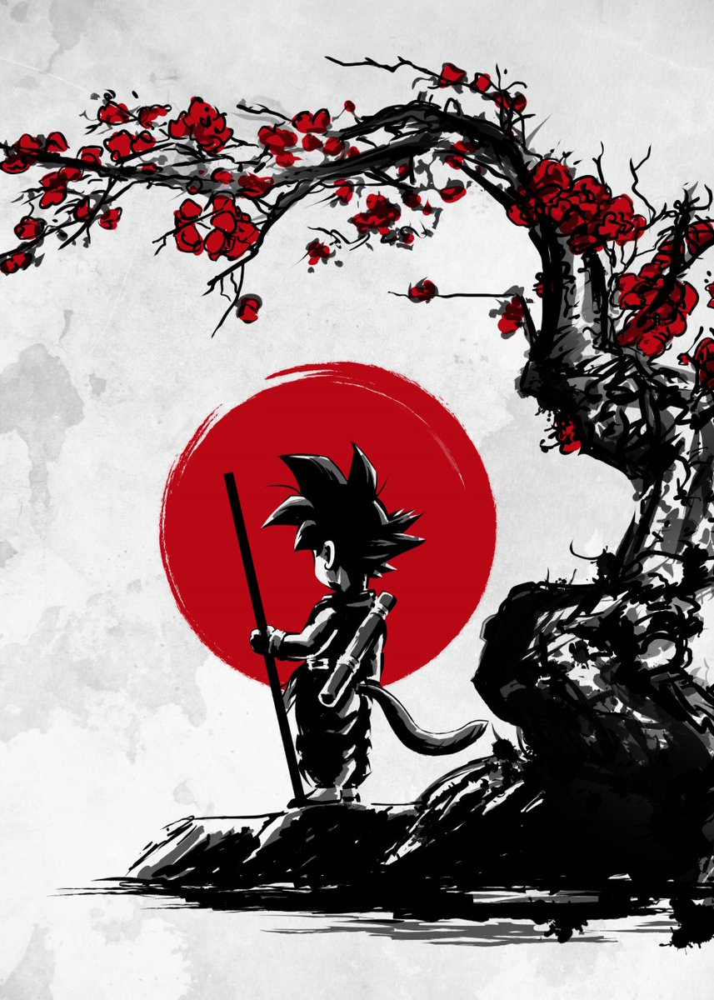
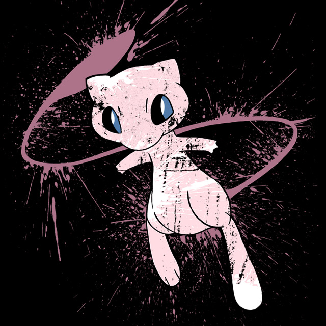

Los tres mejores artistas, que hacen que nuestras camisetas den luz con sus
maravillosas obras

DdjigoEste diseñador tiene varios diseños populares inspirados en series
de anime como Dragon Ball, Attack on Titan y otros clásicos. Sus camisetas se
destacan por su estilo vibrante y detallado Vicent TrinidadEs famoso por su estilo retro y su enfoque en personajes icónicos
de anime y cultura japonesa, como Naruto y Akira. Sus diseños tienen un toque
vintage que los hace únicos

Yiannis TeesCon un enfoque en personajes de anime y cultura otaku, sus camisetas
mezclan humor y estilo, lo que las hace muy populares entre los fans del
anime más moderno